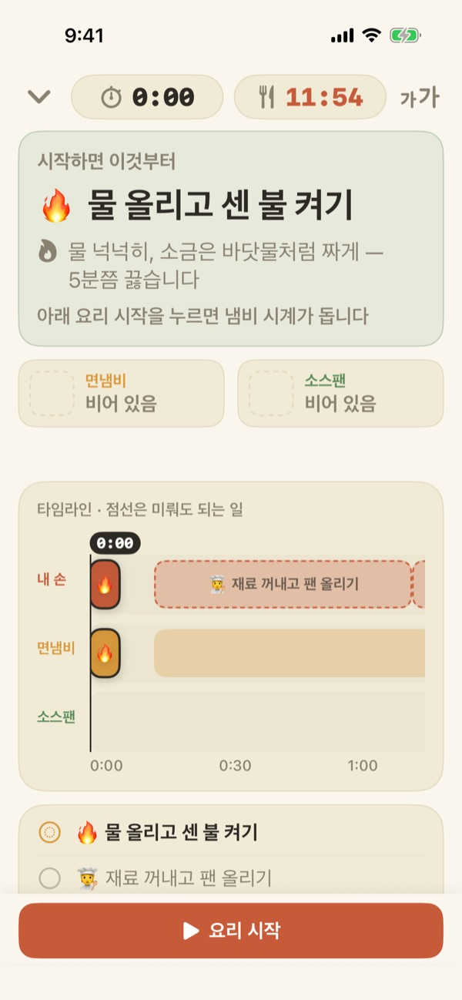
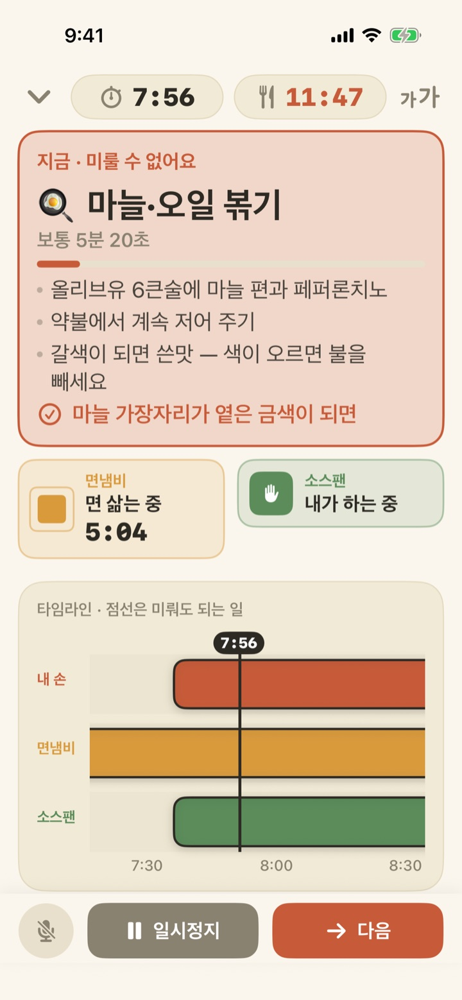
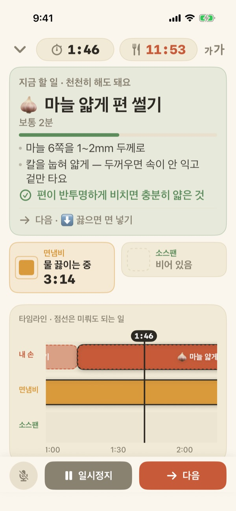
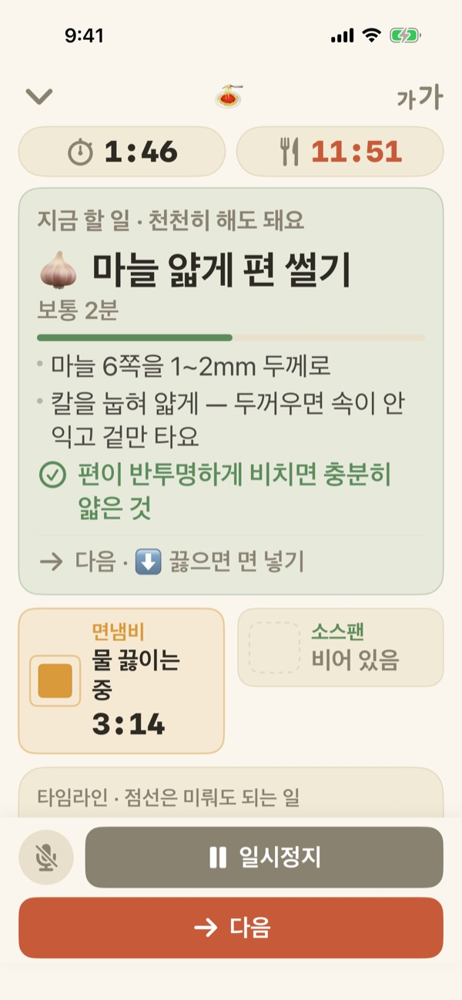

면 삶는 그사이에
소스까지
냄비 두 개가 서로 다른 속도로 도는 요리에서, 지금 손이 할 일 하나만 크게 보여 줍니다. 소스는 면이 나오는 시각에 맞춰 거꾸로 시작됩니다.
모든 기능이 무료이고, 계정이 필요 없습니다.

직접 해 보세요
알리오 올리오 한 판을 20배 빠르게 돌려 봅니다. 요리 시작을 누르고, 할 일을 마쳤다 치고 다음을 눌러 보세요. 면 건질 때가 오면 카드가 어떻게 바뀌는지도 보세요.
타이머를 세 개 맞춰 놓고도 면이 퍼진 적 있나요?
면 타이머, 소스 타이머, 마늘 볶는 시간을 따로 재다 보면 어느 게 먼저인지 헷갈립니다. 마늘을 썰다 면 건질 때를 놓치고, 소스는 면보다 늦게 끝납니다. 그사이에는 레시피를 '무엇 다음에 무엇'으로 알고 있어서, 지금 해야 할 일 하나만 알려 줍니다.
미룰 수 없는 일이 오면 카드가 붉어집니다
면 건지기, 타기 직전의 마늘처럼 늦으면 음식이 상하는 일이 오면 카드가 테라코타색으로 바뀌고, 하던 도마 일은 잠시 멈추라고 알려 줍니다.
냄비가 다 되면 화면을 보고 있지 않아도 알림이 오고, 바로 해야 할 일을 함께 알려 줍니다.

썰고 가는 일은 손이 빌 때만
마늘 썰기, 치즈 갈기, 계량은 언제 해도 되는 일이라 초를 세지 않습니다. 막대가 차오르다 냄비가 부르면 멈추고, 돌아오면 하던 자리에서 이어집니다.
불을 3분 늦게 켜면 뒤따르는 일도 함께 3분 밀립니다. 시간표는 실제로 한 시각에서 매번 다시 계산합니다.

조리대에 세워 두고, 말로 넘깁니다
한두 걸음 떨어져서도 읽히도록 글자 크기를 네 단계로 키울 수 있고, 요리하는 동안에는 화면이 꺼지지 않습니다.
손이 젖었으면 다음이라고 말하세요. 화면을 만지지 않아도 다음 일로 넘어갑니다.

시작은 세 단계면 됩니다
- 1
요리를 고릅니다
몇 분 걸리는지, 냄비가 몇 개 필요한지만 보고 고르면 됩니다.
- 2
요리 시작을 누릅니다
첫 할 일을 먼저 보여 주고, 누르는 순간부터 냄비 시계가 돕니다.
- 3
끝나면 다음
버튼을 누르거나 다음이라고 말하면 그때 할 일이 나옵니다.
색이 곧 급한 정도입니다
- 초록
- 도마 일입니다. 천천히 해도 됩니다.
- 머스터드
- 냄비에 할 동작이 왔습니다. 지금 하면 되지만 급하지는 않습니다.
- 테라코타
- 미루면 면이 퍼지거나 탑니다. 지금 해야 합니다.
- 냄비 칸
- 네모가 줄어드는 만큼이 남은 시간입니다. 냄비 시간은 숨기지 않습니다.
타임라인에서 점선으로 그린 막대는 미뤄도 되는 일입니다.
모든 기능이 무료입니다
무료
- 레시피 두 가지 전부
- 냄비마다 따로 세는 타이머와 전체 타임라인
- 냄비가 다 되면 오는 알림
- 말로 넘기기
- 글자 크기 네 단계
- Siri와 단축어로 바로 열기
개발자 응원하기 (선택)
- 고마울 때 설정에서 작은 팁을 보낼 수 있습니다
- 팁은 기능을 열지 않습니다. 보내지 않아도 모든 기능이 그대로입니다
한 번씩 보내는 팁이고, 구독이 아닙니다.
계정도 광고도 없고, 인터넷이 없어도 요리할 수 있습니다.
자주 묻는 질문
다음이라고 말해도 안 넘어가요.
왼쪽 아래 마이크 버튼이 빨간색이면 듣는 중이고, 회색이면 꺼진 상태입니다. 처음 켤 때 마이크와 음성 인식 권한을 모두 허용해야 하며, 거절했다면 설정 앱 > 그사이에에서 다시 켤 수 있습니다. 주변이 아주 시끄러우면 화면 아래의 다음 버튼을 눌러 주세요.
냄비가 다 됐는데 알림이 안 와요.
설정 앱 > 알림 > 그사이에에서 알림이 켜져 있는지 확인해 주세요. 집중 모드가 켜져 있으면 소리가 나지 않을 수 있습니다. 알림은 냄비가 다 됐을 때만 옵니다. 썰기나 갈기 같은 도마 일은 재촉하지 않으려고 알리지 않습니다.
시작이 늦어지면 시간표는 어떻게 되나요?
실제로 한 시각에서 다시 계산합니다. 불을 3분 늦게 켜면 뒤따르는 일도 함께 3분 밀리고, 소스는 면이 나오는 시각에 맞춰 거꾸로 잡힙니다.
글자가 작아요.
조리 화면 오른쪽 위의 가가 버튼에서 보통, 크게, 더 크게, 아주 크게 중에 고를 수 있습니다. 고른 크기는 다음에도 그대로 남습니다.
요리하는 동안 화면이 꺼지나요?
조리 중에는 화면이 꺼지지 않습니다. 손이 젖어 있어도 화면을 만질 일이 없게 했습니다.
어떤 요리가 들어 있나요?
알리오 올리오(약 15분, 냄비 2개)와 토마토 크림 파스타(약 20분, 냄비 2개)입니다. Serious Eats, Gimme Some Oven, RecipeTin Eats, The Burnt Butter Table의 레시피를 참고했습니다. 냄비 두 개가 동시에 도는 요리라면 무엇이든 맞으니, 넣고 싶은 레시피를 알려 주세요.
제 목소리가 저장되나요?
아니요. 다음이라는 말만 알아듣고 소리는 녹음하거나 저장하지 않습니다. 기기가 지원하면 음성 인식도 기기 안에서만 처리합니다. 수집하는 개인정보가 없습니다.
Siri로 열 수 있나요?
네. Siri나 단축어 앱에서 요리를 고르면 그 요리의 조리 화면이 바로 열립니다. 시계는 물 올릴 준비가 됐을 때 요리 시작을 누르면 돌기 시작합니다.
어떤 기기에서 쓸 수 있나요?
iOS 17 이상의 iPhone과 iPad에서 쓸 수 있습니다. 계정이 필요 없고, 인터넷이 없어도 됩니다.
문제를 알리거나 레시피를 제안하려면요?
앱의 설정 > 피드백 보내기나 아래 메일로 보내 주세요. 기기 모델과 iOS 버전을 함께 적어 주시면 더 빨리 확인할 수 있습니다. 보통 며칠 안에 답을 드립니다.
막히는 것, 이상한 것, 넣고 싶은 레시피 모두 leeo@kakao.com로 보내 주세요.